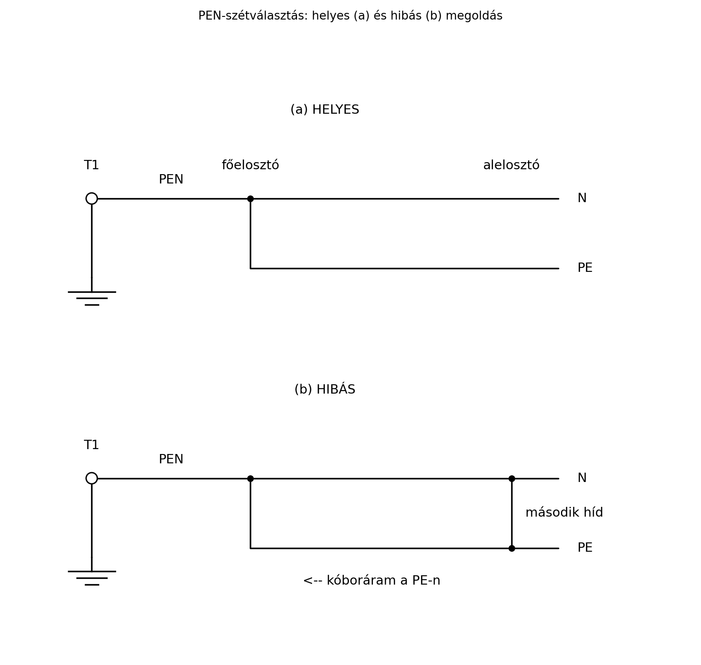

![Egyvonalas rajz fentről lefelé: 20 kV közcélú hálózat, T1 20/0,4 kV 630 kVA Dyn5 transzformátor (u_k = 4 %), Q0 1000 A főmegszakító, MDB gyűjtősín 22,7 kA becsült zárlati árammal. Az MDB-ről Q1 250 A a DB-M motoros alelosztóra, Q2 100 A a DB-V világítási alelosztóra, Q3 160 A a síncsatornára leágazó dobozokkal, Q4 63 A a DB-I irodai alelosztóra. A DB-M-ről Q11 motorvédő, K11 kontaktor, M1 7,5 kW motor és Q12, K12, M2 15 kW; a DB-V-ről F21 B16 kismegszakító a csarnokvilágításhoz és F22 RCBO B16 30 mA az aljzatkörhöz. Jobb oldalt a szintek zárlati áramának nagyságrendje: főelosztó 10–25 kA, alelosztó 3–10 kA, végáramkör 0,5–3 kA.](figures/img/ve119-1.png)
Egy fémmegmunkáló üzemben a kompresszorház leágazásán rövidzárlat keletkezik. A leágazás megszakítója leold, de a főelosztó főmegszakítója is, ezért az egész csarnok feszültségmentessé válik. A termelés órákra leáll, a kemence lehűl, az automatika elveszti a paramétereit. A szerelő nemcsak a hibát javítja, hanem jogosan teszi fel a kérdést: miért okozott egyetlen leágazási hiba teljes üzemleállást? A válasz az ipari elosztóhálózat szerkezetében, védelmi kialakításában és a terhelés becslésében rejlik. Ebben az alfejezetben megismerjük az ipari elosztóhálózatok topológiáit, az egyidejűségi tényező szerepét, valamint a tartalék betáplálás és a megbízhatóság alapelveit, hogy a lakóépületi elosztóktól eltérő gondolkodásmódot kialakítsuk.
Az ipari elosztóhálózatot legkönnyebb rétegesen, a betáplálástól a fogyasztókig haladva elképzelni.
Az alábbi egyvonalas áttekintő rajz egy kisebb üzem teljes láncát mutatja a 20 kV-os betáplálástól a motorig, a lámpáig és az aljzatig. Az egyvonalas rajzon egy vonal a háromfázisú vezetékrendszer összes vezetőjét jelenti (a vonalon lévő ferde vonások a vezetők számát jelzik).
Ábraolvasás. Fentről lefelé haladva a T1 transzformátor, a Q0 főmegszakító és az MDB gyűjtősín a főelosztó szintje; itt a legnagyobb a zárlati áram. A 630 kVA-es, -os transzformátor zárlati impedanciája , ebből a kapcsain kA (a hálózati impedanciát elhanyagoló, felső becslés; ellenőrizendő: a tényleges értéket a Méretezés: terhelés, feszültségesés és zárlat egyszerű esetekben alfejezet módszerével kell számolni). A Q1–Q4 leágazások a DB-M motoros, a DB-V világítási és a DB-I irodai alelosztót, illetve a síncsatornát (SC, lásd a Síncsatorna, energiaoszlop, kábeltálca és kábelpadló alfejezetet) táplálják. A DB-M alatt a motorleágazás jellegzetes sorrendje látszik: Q11 motorvédő kapcsoló (leválasztás, zárlat- és túlterhelés-védelem), K11 kontaktor (üzemi kapcsolás), M1 motor. A DB-V alatt az F21 kismegszakító a világítási kört, az F22 RCBO az aljzatkört védi. Lefelé haladva a kábelek és a transzformátor impedanciája összeadódik, ezért a zárlati áram csökken, és vele a készülékek szükséges megszakítóképessége is (a jobb oldali sáv nagyságrendjei). Minden szinten van leválasztó és védelmi készülék, így egy hiba csak a saját szintjén lévő készüléket oldja le, ha a szelektivitás rendben van. A betűjelek (Q, K, M, F, DB-x) a Mérő- és jelzőkészülékek, feliratok és dokumentáció alfejezet jelölési szabályait követik.
Kérdés az ábrához: melyik készüléknek kell a legnagyobb megszakítóképességűnek lennie, a Q0-nak vagy az F21-nek, és miért?
Az ábrán az is látszik, hogy a lakóépületi elosztóhoz képest itt több szint, nagyobb teljesítmény, több motoros fogyasztó és lényegesen nagyobb zárlati áram jelenik meg. A hibák hatása ezért egy-egy szinten túl is terjedhet, ha a védelmi láncot nem gondoljuk át.
Definíció. Az ipari elosztóhálózat a villamos energia elosztásának az a része, amely a betáplálási ponttól (például a transzformátor 0,4 kV-os kapcsaitól) az egyes fogyasztói leágazásokig vezet, beleértve a kapcsoló- és védelmi készülékeket, a gyűjtősíneket, a vezeték- vagy sínrendszereket és a csatlakozási pontokat.
Az ipari hálózat jellemzői a lakóépületi elosztókkal szemben:
A Szelektivitás, hátvédelem és megszakítóképesség alfejezetben tanult elvek itt teljesednek ki: egy ipari hálózatban a hibaelhárítás során nem elég a hibás leágazást kikapcsolni, hanem a lehető legkisebb üzemrészt szabad csak lekapcsolni.
A hálózat szerkezetét topológiának nevezzük. Három alapvető ipari elrendezést különböztetünk meg: a sugaras, a gyűrűs és a hurkolt hálózatot.
Definíció. Sugaras hálózat (radial feeder). Minden leágazás és fogyasztó csak egyetlen útvonalon kaphat táplálást. A betáplálástól a fogyasztókig nincs zárt kör, tehát a hálózati gráfban nincs hurok. Ha egy szakaszon hiba lép fel, az adott szakaszon túli összes fogyasztó feszültségmentessé válik.
Definíció. Gyűrűs hálózat (ring main). A fővezeték vagy az alelosztók betáplálása zárt gyűrűt alkot, de a gyűrűt üzemszerűen egy ponton nyitva hagyják (nyitott gyűrű). A gyűrű két végét ugyanahhoz a betápláláshoz vagy két különböző betápláláshoz csatlakoztatják. Hibás szakasz kikapcsolása után a gyűrűt átrendezve a fogyasztók nagy része továbbra is táplálható.
Definíció. Hurkolt hálózat (meshed network). Olyan hálózat, amelyben több, egymással összekapcsolt betáplálási út is létezik, tehát a fogyasztók több irányból is táplálhatók. A zárt hurkok miatt a rövidzárlati áram nagyobb, a védelmi szelektivitás bonyolultabb, ezért a kisfeszültségű ipari hálózatokban ritkábban alkalmazzák, mint a sugaras vagy a nyitott gyűrűs megoldást.
Az alábbi egyvonalas vázlatok a három topológiát a 4. feladat jelöléseivel mutatják. A sugaras hálózatban a T1 transzformátortól a Q1 főmegszakítón és a gyűjtősínen át a Q2 a DB-A, a Q3 a DB-B alelosztót táplálja, mindegyiket egyetlen úton. A nyitott gyűrűben a két alelosztót a Q4 gyűrűkapcsoló is összeköti, de ez üzemszerűen nyitva van, így a hálózat normál üzemben sugarasan működik; hiba után Q4 zárásával lehet áttáplálni. A hurkolt hálózatban két betáplálás (T1, T2) és három csomópont zárt hurkot alkot, minden csomópont két irányból is táplált.
![Sugaras és nyitott gyűrűs ipari elosztóhálózat (egyvonalas vázlat) - (a) Sugaras: T1 – Q1 főmegszakító – gyűjtősín – Q2 → DB-A és Q3 → DB-B alelosztó; minden alelosztóhoz egyetlen út vezet. (b) Nyitott gyűrű: ugyanez, de DB-A és DB-B között a Q4 gyűrűkapcsoló is ott van, üzemszerűen NYITVA (a rajzon nyitott kapcsolóként). Ha például a DB-A betápláló kábele hibás, Q2 nyitva marad, és Q4 zárásával DB-A a Q3 – DB-B úton át táplálható. Q4 zárása előtt a reteszelést és a zárlati viszonyokat ellenőrizni kell.](assets/ve119-diagram-1.png)

A gyakorlati ipari hálózatok legtöbbször sugaras felépítésűek, de a fontos fogyasztóknál tartalék betáplálással vagy gyűrűs átrendezéssel növelik a rendelkezésre állást. A gyűrűs elrendezés akkor előnyös, ha a fogyasztók egy csarnokban, egy útvonal mentén helyezkednek el, és a kiesésük jelentős termelési kárt okoz.
Összefüggés. Minél több útvonalon juthat el az energia egy fogyasztóhoz, annál nagyobb a rendelkezésre állás, de annál nagyobb a zárlati áram és annál nehezebb a szelektív védelmi lánc kialakítása. A tervezés során tehát kompromisszumot kell kötni a megbízhatóság és a védhetőség között.
Az ipari hálózat méretezésének első lépése a várható terhelés becslése. A beépített teljesítmény önmagában nem elegendő, mert a fogyasztók nem mind egyszerre üzemelnek teljes terheléssel.
Definíció. Egyidejűségi tényező (angolul simultaneity vagy coincidence factor; vigyázat: a „diversity factor” szó egyes forrásokban ennek reciprokát jelenti, az MSZ EN 61439-ben pedig a kapcsolóberendezés névleges egyidejűségi tényezőjét, az RDF-et, amely a szekrény jellemzője, nem a fogyasztóké – lásd Az elosztóberendezések szabványai és típusai; ellenőrizendő: a használt forrás definíciója). Az egyidejűségi tényező a csúcsidőben ténylegesen egyidejűleg felvett hatásos teljesítmény és az összes beépített névleges hatásos teljesítmény hányadosa:
ahol:
Motoroknál helyett a hálózatból felvett teljesítmények összegét, -t vesszük, mert az adattábla a tengelyen leadott teljesítményt adja; ellenállásos és egyéb fogyasztónál a névleges teljesítmény már a felvett teljesítmény.
Az egyidejűségi tényező értéke mindig . Lakóépületekben a lakások számától függően jellemzően kicsi (például 0,2–0,6), mert a háztartások fogyasztása időben eloszlik. Az iparban az érték üzemtől és technológiától függ: egy folyamatos üzemű szivattyútelepen közel lehet 1-hez, egy műhelyben viszont a gépek ritkán üzemelnek egyszerre, ezért 0,5–0,8 lehet. A konkrét értéket mindig a folyamatismeretből, a gyártói adatokból vagy a tervezési előírásokból kell meghatározni. (ellenőrizendő: az adott üzemre vonatkozó egyidejűségi tényező)
Figyelem. Az egyidejűségi tényezőt nem szabad automatikusan átvenni egy lakóépületi értékből. Egy ipari üzemben a terhelés jellege, a műszakok, az automatikus indítások és a folyamatirányítás miatt a akár 0,9 is lehet, ezért a hálózatot a valós folyamatra kell méretezni.
Az ipari hálózat tervezésénél a rendelkezésre állás és a termelésbiztonság alapvető szempont. A szelektivitás biztosítja, hogy a hibás szakasz leválasztása ne érintse a hibátlan részeket. A hátvédelem és a megszakítóképesség pedig azt garantálja, hogy a védelmi készülékek a fellépő zárlati áramot el tudják viselni.
Szabály. Az ipari létesítmények villamos berendezéseinek tervezésére és ellenőrzésére is az MSZ HD 60364 sorozat vonatkozik, kiegészítve a kapcsolóberendezésekre vonatkozó MSZ EN 61439 és a gépek villamos berendezéseire vonatkozó MSZ EN 60204-1 szabvánnyal. A hálózati csatlakozás feltételeit a helyi elosztói engedélyes írja elő. (ellenőrizendő: aktuális szabványszámok és hatályos követelmények)
Tartalék betáp (redundancia). Fontos fogyasztóknál gyakran két független betáplálást építenek ki: az egyik az üzemi, a másik a tartalék. A tartalék lehet egy másik transzformátorról, egy másik elosztói betáplálásról vagy szünetmentes áramforrásról (UPS) táplált ág. A két betáplálást mechanikus vagy villamos reteszeléssel kell ellátni, hogy soha ne járhassanak párhuzamosan, mert ez visszatáplálást, túlterhelést vagy hibás védelmi működést okozhat.
Az n–1 elv. A hálózat megbízhatóságának egyszerű megfogalmazása, hogy egy elem kiesésekor a rendszer még biztonságosan, ha nem is teljes kapacitással, de tovább üzemelhessen. Két transzformátoros üzemnél gyakran úgy méreteznek, hogy az egyik transzformátor kiesésekor a másik átvegye a fontos fogyasztókat, a nem fontos terheléseket pedig leválasztják.
Két transzformátoros főelosztó sínbontóval. Az n–1 elvű tartalékot az ipari főelosztókban jellemzően úgy valósítják meg, hogy a két transzformátor két külön gyűjtősínszakaszt táplál, és a két szakaszt egy sínbontó (sínkapcsoló, csatolómegszakító) köti össze. Az alábbi egyvonalas rajzon a T1 a Q1 betáplálási megszakítón át az A sínt, a T2 a Q2-n át a B sínt táplálja; a Q3 sínbontó normál üzemben nyitva van. A fontos fogyasztók (hűtés, kompresszor) az A, a kevésbé fontosak (csomagolás, iroda) a B sínre csatlakoznak.

A három kapcsoló között „háromból legfeljebb kettő zárható” reteszelés van (a rajzon szaggatott vonal). A reteszelési táblázat (1 = zárva, 0 = nyitva):
| Q1 | Q2 | Q3 | Üzemállapot | Megengedett? |
|---|---|---|---|---|
| 1 | 1 | 0 | normál üzem: két sín külön, nincs párhuzamos járatás | igen |
| 1 | 0 | 1 | T2 kiesett vagy ki van kapcsolva: T1 táplálja mindkét sínt | igen, a nem fontos fogyasztók leválasztása után (n–1 példa) |
| 0 | 1 | 1 | T1 kiesett: T2 táplálja mindkét sínt | igen, a terhelés csökkentése után |
| 1 | 1 | 1 | a két transzformátor párhuzamosan jár | TILOS: nagyobb zárlati áram (a megszakítóképesség túlléphető), kiegyenlítő áramok, hibás védelmi működés |
Olvasd le a rajzról: melyik kapcsolót kell nyitni és reteszelni, mielőtt T2 kiesésekor a Q3-at zárod? A reteszelés lehet mechanikus (kulcsos reteszelés: egy kulcs csak a nyitott és reteszelt készülékből vehető ki, és csak azzal zárható a következő – „kulcsátadás”) vagy villamos (a többi készülék nyitott állapotát jelző segédérintkezők a zárótekercs körében). A kapcsolási sorrendet az üzem kapcsolási utasítása rögzíti, és csak erre jogosult személy kapcsolhat. Aggregátoros tartalék esetén az automatikus átkapcsolást a Szünetmentes áramforrások, aggregátorok és akkumulátorok alfejezet tárgyalja.
Továbbvitt eredmény. Az itt kiválasztott topológia, a becsült egyidejű csúcsteljesítmény és a tartalék betáplálás igénye határozza meg, hogy a Síncsatorna, energiaoszlop, kábeltálca és kábelpadló alfejezetben milyen fizikai szerelési módot és útvonalat választunk.
Az ipari üzem saját transzformátorról vagy a közcélú hálózatról kap táplálást, és a főelosztótól jellemzően TN-S rendszerben (öt vezetővel: L1, L2, L3, N, PE) osztja tovább az energiát (Hálózati rendszerek: TN-C, TN-S, TN-C-S, TT, IT, Védővezető, PEN és a keresztmetszet méretezése). A következő szabályokat mind ellenőrizni kell (ellenőrizendő: MSZ HD 60364-4-44 és -5-54):

A több forrású, szünetmentes táplálás részleteit a Szünetmentes áramforrások, aggregátorok és akkumulátorok alfejezet tárgyalja.
A lakóépületi elosztó és az ipari elosztó közötti különbségeket a következő táblázat foglalja össze:
| Szempont | Lakóépületi elosztó | Ipari elosztóhálózat |
|---|---|---|
| Teljesítmény | néhány kW–tíz kW lakásonként | tíz kW–több MW |
| Fogyasztók jellege | világítás, dugaszoló aljzatok, háztartási gépek | motorok, hajtások, kemencék, hegesztők, automatika |
| Zárlati áram | jellemzően kicsi, 1,5–6 kA | nagy, akár 25–100 kA |
| Egyidejűségi tényező | lakások számával csökkenő, 0,2–0,6 | üzemfüggő, 0,5–1,0 |
| Topológia | legtöbbször sugaras, egy betáplálással | sugaras, gyűrűs vagy tartalék betáplálással |
| Védelem | kismegszakítók, FI-relék egyszerű láncban | megszakítók, motorvédők, szelektív és hátvédelmi koordináció |
| Megbízhatósági igény | a kényelmi és biztonsági igény a fontos | a termeléskiesés csökkentése, folyamatbiztonság |
| Dokumentáció | egyszerűbb egyvonalas rajz | részletes egyvonalas rajz, zárlati és terhelési számítások, védelmi beállítási táblázat |
A táblázatból látható, hogy az ipari hálózat tervezése nem egyszerű „nagyobb lakáselosztó”. A hibás méretezés vagy a rossz védelmi beállítás nemcsak a fogyasztókat, hanem az egész termelést veszélyezteti.
Egy csarnokhálózat átalakítása gyűrűssé. Egy élelmiszer-feldolgozó üzemben a hűtőkompresszorokat és a csomagológépeket egyetlen sugaras kábelrendszer táplálta. Egy földzárlat a csarnok közepén lévő alelosztóban leoldotta a főmegszakítót, így a teljes hűtőlánc leállt. A vizsgálat kimutatta, hogy a főmegszakító és az alelosztó leágazása között nem volt szelektivitás; ezt a főmegszakító késleltetett (rövid késleltetésű) beállításával javították (ellenőrizendő: gyártói adatlap, szelektivitási táblázat). A szerelő emellett azt javasolta, hogy a csarnok fogyasztóit két szakaszra bontva nyitott gyűrűként alakítsák ki: az egyik szakaszt a főelosztó A leágazása, a másikat a B leágazása táplálja. A két szakasz közé egy nyitott gyűrűkapcsolót helyeztek el. Ha az egyik betáplálás kiesik, a gyűrűkapcsolót zárva a másik betáplálás át tudja venni a fontos fogyasztókat. A védelmeket úgy állították be, hogy áttápláláskor (más útvonalon, más zárlati árammal) is szelektíven oldjanak le. A gyűrű a szelektivitási hibát nem orvosolja, csak a betáplálás kiesése utáni áttáplálást teszi lehetővé. Biztonsági korlát. A 230/400 V-os hálózaton és a kapcsolóberendezésen csak jogosult, arra képesített személy végezhet munkát.
Ez az eset jól mutatja a topológia és a védelmi koordináció együttes szerepét: a gyűrű lehetőséget ad az áttáplálásra, de a tervezésnél figyelembe kell venni a megnövekedett zárlati áramot és a gyűrűkapcsoló reteszelését.
1. hiba – Az ipari hálózatot lakóépületi egyidejűségi tényezővel méretezik. A szerelő a lakásoknál megszokott értéket alkalmazza egy műhelyre is, ahol a gépek a műszak kezdetén egyszerre indulnak. A betápláló kábelt alulméretezi, a főmegszakító túlterhelés miatt rendszeresen leold. Helyes gyakorlat: az egyidejűségi tényezőt a tényleges üzemvitelből, a technológiai sorrendből és a motorok indítási viszonyaiból kell meghatározni.
2. hiba – A gyűrűt állandóan zárva üzemeltetik. A gyűrűt azért nyitják meg egy ponton, hogy a hálózat sugarasan, egyszerűen védhető legyen. Ha a gyűrűt zárva hagyják, a rövidzárlati áram megnő, és a védelmek nem feltétlenül szelektívek, ezért egy hiba két irányból is táplálva nagyobb károkat okozhat. Helyes gyakorlat: a gyűrűt üzemszerűen nyitva kell hagyni, és csak a hiba elhárításához szükséges áttápláláskor szabad zárni.
3. hiba – A tartalék betáplálásnál nincs reteszelés. Ha a hálózati és a tartalékforrás együtt tud üzemelni, visszatáplálás jöhet létre, ami a hálózati dolgozókat veszélyeztetheti, és a védelmeket is megzavarhatja. Helyes gyakorlat: mechanikus vagy villamos reteszelést kell beépíteni, amely kizárja a párhuzamos üzemet.
Gyakorlás: ennek az alfejezetnek a kidolgozott példái, gyakorlatai és megoldással ellátott feladatai az Összefoglaló feladatgyűjtemény villanyszerelő tanulóknak című kötet 33.1 szakaszában találhatók.
Az ipari elosztóhálózat a betáplálástól a fogyasztókig vezető kapcsoló-, védelmi és vezetékrendszer, amely nagy teljesítménye, nagy zárlati árama és magas rendelkezésre állási igénye miatt eltér a lakóépületi elosztótól. Alapvető topológiái a sugaras, a nyitott gyűrűs és a hurkolt hálózat. A sugaras egyszerű, de egy hiba nagy üzemrészt lekapcsolhat; a gyűrűs áttáplálást tesz lehetővé, de a védelmi koordinációt gondosabban kell megtervezni. A terhelés becslésénél az egyidejűségi tényezőt képlettel vesszük figyelembe. A megbízhatóság növelésére tartalék betáplálást és n–1 elvű méretezést alkalmazunk, de a párhuzamos üzemet reteszeléssel mindig ki kell zárni. Továbbvitt eredmény. A kiválasztott topológia, a becsült egyidejű csúcsteljesítmény és a tartalék betáplálás igénye határozza meg a fizikai szerelési módokat a Síncsatorna, energiaoszlop, kábeltálca és kábelpadló alfejezetben.
A fejezet a villamos hálózatok klasszikus topológiai és teljesítményszámítási ismereteire épül, amelyek stabil tudásnak tekinthetők. A szabványi hivatkozások közül az MSZ HD 60364 sorozat, az MSZ EN 61439 és az MSZ EN 60204-1 aktuális kiadását, valamint a hálózati engedélyes csatlakozási feltételeit a felhasználás előtt ellenőrizni kell. Az egyidejűségi tényező konkrét számszerű értékei üzem- és folyamatfüggők, ezért azokat mindig az adott létesítményre vonatkozó tervezési adatokból vagy mérési tapasztalatokból kell meghatározni. A példákban szereplő áram- és teljesítményértékek tanulási célt szolgálnak, nem tervezési előírások. (ellenőrizendő: aktuális szabványkiadások, egyidejűségi tényezők, megszakítók kioldási adatai)